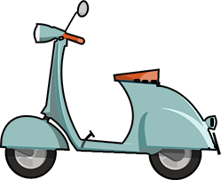

<!DOCTYPE html>
<html lang="en">

<head>
    <meta charset="UTF-8">
    <meta name="viewport" content="width=device-width,height=device-height,initial-scale=1.0, minimum-scale=1.0, maximum-scale=1.0, user-scalable=no">
    <meta content="yes" name="apple-mobile-web-app-capable" />
    <meta content="black" name="apple-mobile-web-app-status-bar-style" />
    <meta content="telephone=no" name="format-detection" />
    <title>港迅H5招聘</title>
    <link rel="stylesheet" type="text/css" href="css/swiper.min.css">
    <link rel="stylesheet" type="text/css" href="css/animate.min.css">
    <link rel="stylesheet" type="text/css" href="css/style.css">
</head>

<body>
    <!-- Swiper -->
    <div class="swiper-container">
        <div class="swiper-wrapper">
            <!-- 第1屏-start -->
      <!--          <div class="swiper-slide">
                <div class="page-one">
                    <div class="activ-one ani"  swiper-animate-effect="fadeInDown" swiper-animate-duration="0.5s" swiper-animate-delay="0.1s"></div>
                    <div class="one-box ani" swiper-animate-effect="fadeInDown" swiper-animate-duration="0.5s" swiper-animate-delay="0.6s">
                        <div class="inline-box" >
                            
                            
                            
                        </div>
                        <div class=" twopic-box"></div>
                        <div class="threepic-box "></div>
                    </div>
                    <div class="two-box ani" swiper-animate-effect="fadeInLeft" swiper-animate-duration="0.5s" swiper-animate-delay="1.2s">
                        <div class="left-pic"></div>
                        <div class="right-pic ">
                            
                            
                            
                            
                        </div>
                    </div>
                    <div class="three-box ani" swiper-animate-effect="fadeInRight" swiper-animate-duration="0.5s" swiper-animate-delay="1.8s">
                        <div class="pic-left">
                            
                            
                            
                            
                            
                        </div>
                        <div class="pic-right">
                            
                        </div>
                    </div>
                </div>
                <div class="arrows-box"></div>
            </div> -->
            <!-- 第1屏-stop -->
            <!-- 第2屏-start -->
        <!--           <div class="swiper-slide">
                <div class="page-two">
                    <div class="two-a ani" swiper-animate-effect="fadeInDown" swiper-animate-duration="0.5s" swiper-animate-delay="0.3s"></div>
                    <div class="two-b ani" swiper-animate-effect="fadeInDown" swiper-animate-duration="0.5s" swiper-animate-delay="0.3s"></div>
                    <div class="two-c ani" swiper-animate-effect="fadeInRight" swiper-animate-duration="0.5s" swiper-animate-delay="0.3s"></div>
                    <div class="two-d ani" swiper-animate-effect="fadeInRight" swiper-animate-duration="0.5s" swiper-animate-delay="0.3s"></div>
                    <div class="two-e ani fadeInLeft" swiper-animate-effect="fadeInLeft" swiper-animate-duration="0.5s" swiper-animate-delay="0.3s"></div>
                    <div class="two-f ani" swiper-animate-effect="bounceIn" swiper-animate-duration="0.5s" swiper-animate-delay="0.6s"></div>
                    <div class="txt-box ani" swiper-animate-effect="bounceIn" swiper-animate-duration="0.5s" swiper-animate-delay="1.2s">
                        
                        <a class="ani"  href="joinus.html" swiper-animate-effect="fadeInDown" swiper-animate-duration="0.5s" swiper-animate-delay="1.8s"></a>
                        <div class="mouse-box ani" swiper-animate-effect="bounceIn" swiper-animate-duration="0.5s" swiper-animate-delay="1.5s">
                            <div class="container">
                                <div class="dot"></div>
                                <div class="pulse"></div>
                            </div>
                            
                        </div>
                    </div>
                    <div class="two-h ani" swiper-animate-effect="fadeInUp" swiper-animate-duration="0.5s" swiper-animate-delay="0.3s"></div>
                    <div class="two-i ani" swiper-animate-effect="fadeInUp" swiper-animate-duration="0.5s" swiper-animate-delay="0.3s"></div>
                </div>
                <div class="arrows-box">
                    
                </div>
            </div> -->
            <!-- 第2屏-stop -->
            <!-- 第3屏-start -->
     <!--        <div class="swiper-slide">
                <div class="page-three">
                    <div class="three-a ani" swiper-animate-effect="fadeInDown" swiper-animate-duration="0.5s" swiper-animate-delay="0.3s"></div>
                    <div class="three-b ani" swiper-animate-effect="fadeInDown" swiper-animate-duration="0.5s" swiper-animate-delay="0.3s"></div>
                    <div class="three-c ani" swiper-animate-effect="fadeInRight" swiper-animate-duration="0.5s" swiper-animate-delay="0.3s"></div>
                    <div class="three-d ani" swiper-animate-effect="fadeInRight" swiper-animate-duration="0.5s" swiper-animate-delay="0.3s"></div>
                    <div class="three-e ani fadeInLeft" swiper-animate-effect="fadeInLeft" swiper-animate-duration="0.5s" swiper-animate-delay="0.3s"></div>
                    <div class="three-f ani" swiper-animate-effect="bounceIn" swiper-animate-duration="0.5s" swiper-animate-delay="0.6s"></div>
                    <div class="three-g ani" swiper-animate-effect="bounceIn" swiper-animate-duration="0.5s" swiper-animate-delay="0.6s"></div>
                    <div class="three-h ani" swiper-animate-effect="bounceIn" swiper-animate-duration="0.5s" swiper-animate-delay="0.6s"></div>
                    <div class="txt-box ani" swiper-animate-effect="bounceIn" swiper-animate-duration="0.5s" swiper-animate-delay="1.2s">
                        
                        <a class="ani" href="joinus.html" swiper-animate-effect="fadeInDown" swiper-animate-duration="0.5s" swiper-animate-delay="1.8s"></a>
                        <div class="mouse-box ani" swiper-animate-effect="bounceIn" swiper-animate-duration="0.5s" swiper-animate-delay="1.5s">
                            <div class="container">
                                <div class="dot"></div>
                                <div class="pulse"></div>
                            </div>
                            
                        </div>
                    </div>
                    <div class="three-j ani" swiper-animate-effect="fadeInUp" swiper-animate-duration="0.5s" swiper-animate-delay="0.3s"></div>
                    <div class="three_k ani" swiper-animate-effect="fadeInUp" swiper-animate-duration="0.5s" swiper-animate-delay="0.3s"></div>
                </div>
                <div class="arrows-box">
                    
                </div>
            </div> -->
            <!-- 第3屏-stop -->
            <!-- 第4屏-start -->
            <!--    <div class="swiper-slide">
             <div class="page-four">
                 	
                 	
                 	
                 	
                 	
                 	
                 	
                 	
                 	<div class="txt-box ani" swiper-animate-effect="bounceIn" swiper-animate-duration="0.5s" swiper-animate-delay="1.2s">
                        
                        <a class="ani" href="joinus.html" swiper-animate-effect="fadeInDown" swiper-animate-duration="0.5s" swiper-animate-delay="2.9s"></a>
                        <div class="mouse-box ani" swiper-animate-effect="bounceIn" swiper-animate-duration="0.5s" swiper-animate-delay="3.5s">
                            <div class="container">
                                <div class="dot"></div>
                                <div class="pulse"></div>
                            </div>
                            
                        </div>
                    </div>
                    
                    
                </div>
                <div class="arrows-box">
                    
                </div>
            </div> -->
            <!-- 第4屏-stop -->

			<!-- 第5屏-start -->
			<div class="swiper-slide">
				<div class="page-five">
					
					
					
					
					
					
					
					
					
					<div class="txt-box ani" swiper-animate-effect="bounceIn" swiper-animate-duration="0.5s" swiper-animate-delay="1.2s">
                        
                        <a class="ani" href="joinus.html" swiper-animate-effect="fadeInDown" swiper-animate-duration="0.5s" swiper-animate-delay="2.9s"></a>
                        
                        <div class="mouse-box ani" swiper-animate-effect="bounceIn" swiper-animate-duration="0.5s" swiper-animate-delay="3.5s">
                            <div class="container">
                                <div class="dot"></div>
                                <div class="pulse"></div>
                            </div>
                            
                        </div>
                    </div>
                    
                       
				</div>
				<div class="arrows-box">
                    
                </div>
			</div>
            <!-- 第5屏-stop -->
        </div>
    </div>
    <!-- Add Pagination -->
    <!-- <div class="swiper-pagination"></div> -->
    </div>
   
    <script src="js/swiper.animate1.0.3.min.js" type="text/javascript"></script>
        <script src="js/swiper.min.js" type="text/javascript"></script>
        <script>
        var swiper = new Swiper('.swiper-container', {
            direction: 'vertical',
            mousewheel: true,
            pagination: {
                el: '.swiper-pagination',
                clickable: true,
            },
            on: {
                init: function() {
                    swiperAnimateCache(this); //隐藏动画元素 
                    swiperAnimate(this); //初始化完成开始动画
                },
                slideChangeTransitionEnd: function() {
                    swiperAnimate(this); //每个slide切换结束时也运行当前slide动画
                }
            }
        });

        
        </script>
</body>

</html>